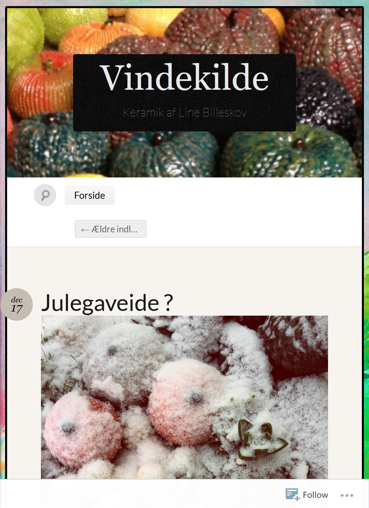
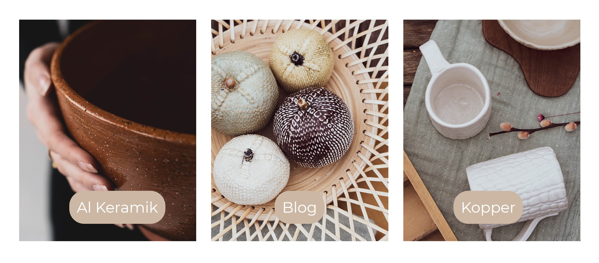
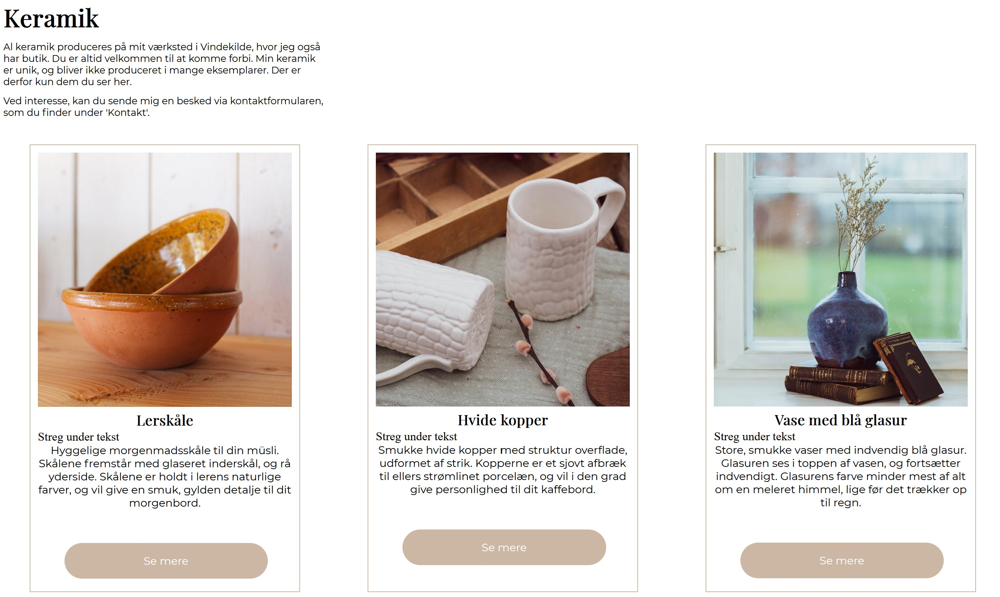
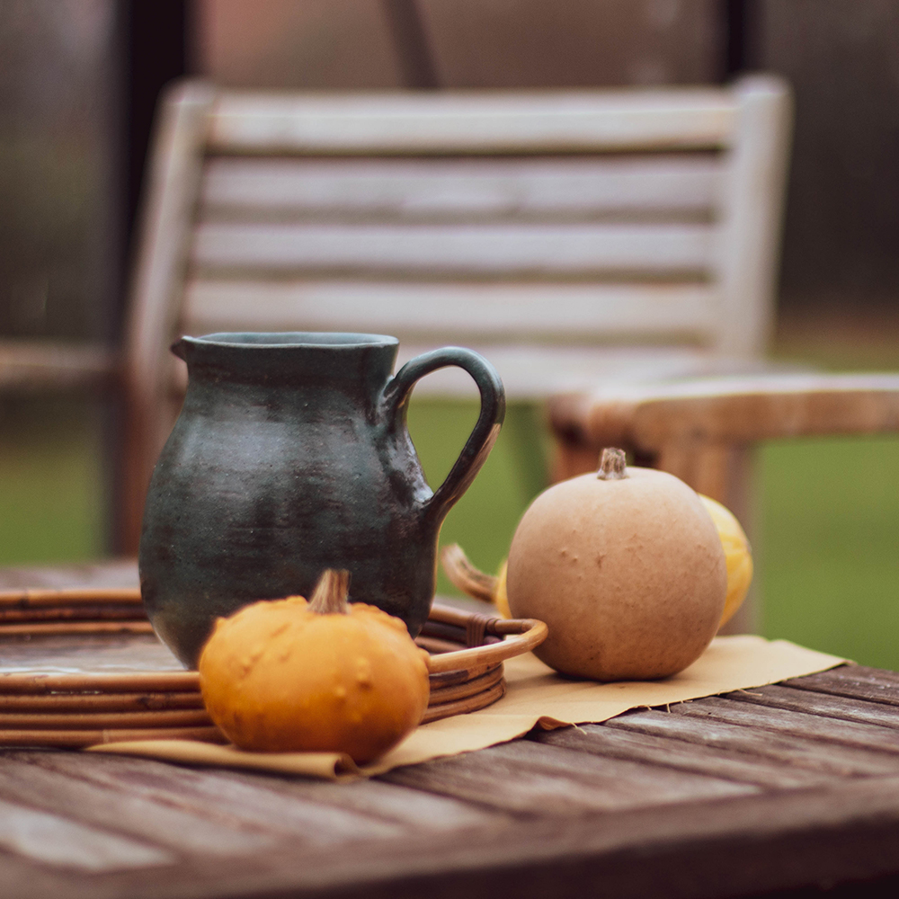
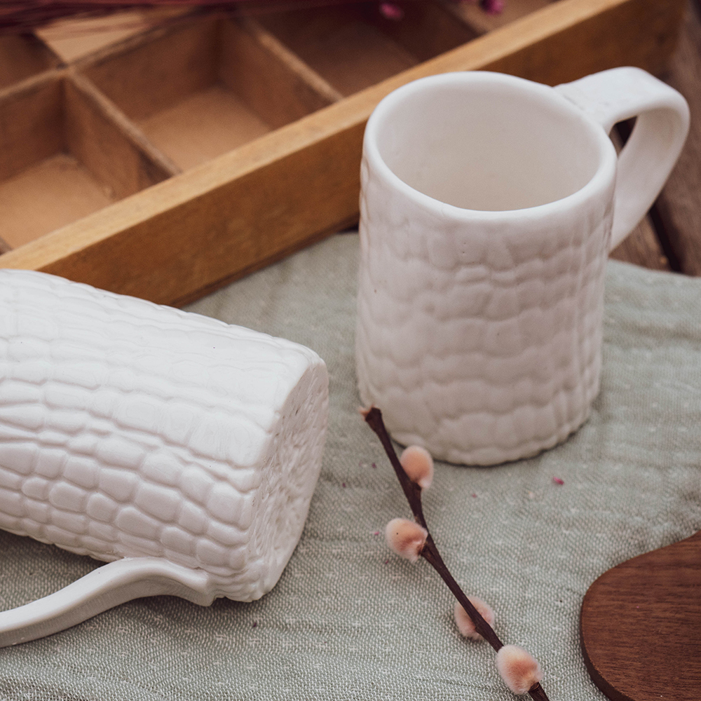
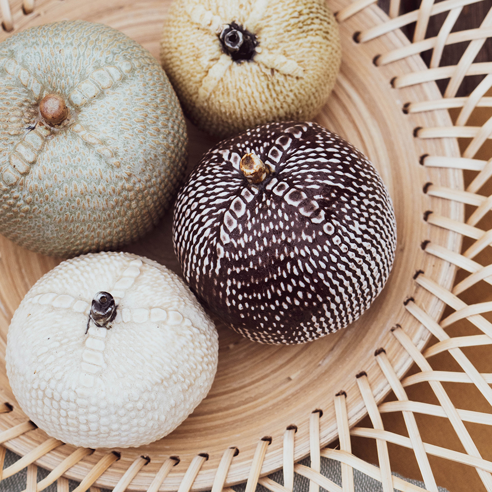

Indhold
Pilotvideo
Under temaet om grundelæggende indhold, blev der bl.a. arbejdet med videoproduktion, fotostil, målgruppeplacering og redesign.

Under forløbet tog vi ud til Luna Fokdal, som er kropsterapeut, hvor vi interviewede hende, og optog video fra flere vinkler. Derudover blev der optaget videoer til b-rolls, som blev klippet sammen til denne pilotvideo om Lunas store passion.
Redesign
Vores gruppe valgte at redesigne Vindekilde by Line Billeskov, da Lines hjemmeside ikke levede op til samme kvalitet, som hendes produkter.
Her er et lille indblik i Line Billeskovs hjemmeside, før den blev redesignet:
Link til Line Billeskovs hjemmeside:
https://vindekilde.wordpress.com/Vi ville gerne gøre Lines hjemmeside mere moderne, og give den samme udtryk, som hendes keramik har, men som hun ikke har formået at vise i billeder eller på hjemmeside. Derfor valgte vi at lave hjemmesiden i lerfarver, for at associere hjemmeside til produkt, samt at tage en masse varme og hyggelige billeder.
 Link til redesignet site:
http://designtree.dk/kea/05_indhold/Vindekilde_redesign/forside.htmlVores tanker var at lave videoer, som virkelig viser området omkring Vindekilde. Vi ville både vise det rolige miljø, hvordan idé bliver til produkt og hvad Line gør for at skille sig ud fra mængden. Bl.a. fandt vi ud af at Lines butik, hus og værksted ligger tæt på vandet, og midt i naturen, hvor hun får det meste af sin inspiration fra. Derudover går hun meget op i bæredygtighed og har derfor anskaffet sig solceller, som producerer al strøm til hendes værksted.
Fotos
Vi valgte at opstille keramikken i hverdagssituationer, da vi gerne ville henvende os til en målgruppe, der ser disse billeder på sociale medier og har købsadfærden til at købe dette produkt. Vi havde på forhånd besluttet os for at redigere billederne i varme farver, og gjorde derfor en del ud af at sætte produkterne hyggeligt og hjemligt op. Samtidig fokuserede vi også på skarphedsdybde og baggrundsslør, for at sætte produkterne og materialet i fokus.
  